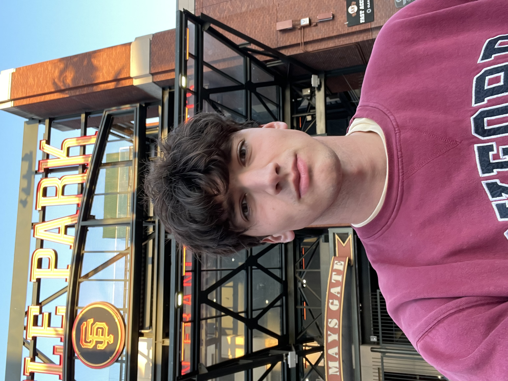

Projects
PWA that extracts names from fraternity composites via OCR and discovers LinkedIn profiles with career classification, nickname expansion, and year-based filtering.
A forecasting tournament for W&L students — vote on campus events, track your accuracy with Brier scores, and climb the leaderboard.
Campus meal swipe sharing app — OTP auth, real-time chat, proof uploads, ratings, and disputes.
Full-stack Next.js application with polished UI, Supabase data flows, and transactional email support.
Website for a nonprofit home medical equipment lending library — equipment catalog, volunteer signups, donation and event pages.
Platform connecting Connolly Entrepreneurship Society members with entrepreneurial alumni at W&L.
Application portal for the Connolly Entrepreneurship Society — streamlined membership intake and review.
An idea I find fascinating
I'm drawn to a pattern that shows up again and again in history: the biggest breakthroughs come from working on a seemingly unrelated problem first — one that quietly multiplies your odds of success by orders of magnitude.
Lincoln put it well: "Give me six hours to chop down a tree and I will spend the first four sharpening the axe." The best strategies look indirect until they work.
Before attempting Mars colonization, SpaceX spent years developing cheap, reusable rockets. A detour that made the actual mission economically possible instead of a one-shot gamble.
DeepMind's founders studied how the human brain learns before building artificial intelligence — then used that AI to solve protein folding with AlphaFold, a problem biologists had struggled with for 50 years.
Turing didn't set out to build a computer. He formalized the idea of a universal machine to answer an abstract math question — and that machine became the tool that broke German Enigma encryption in WWII.
The most promising path to a Theory of Everything in physics may not come from physicists alone — but from AI systems trained to find patterns in data too complex for human intuition.
How I use Claude Code
I've built a custom system of hooks, memory, and automation on top of Claude Code that makes my AI assistant learn from mistakes, remember context across projects, and catch errors before they ship. These are the meta-systems and why each one exists.
A structured markdown knowledge base that carries context between conversations — project references, tech stacks, feedback rules, and my preferences. Without it, every conversation starts from zero. With it, the AI knows my stack, my deploy flags, and the mistakes we've already solved.
Every coding error gets logged with the project, message, fix, and category. When the same error shows up twice across any project, the AI researches the root cause and writes a permanent prevention rule. A Supabase RLS mistake in one project automatically prevents the same mistake in every future one.
A hook intercepts every shell command before execution. It blocks pushes from the wrong directory, scans staged diffs for hardcoded API keys, and warns before removing code without checking for usages. Built after I accidentally committed a Supabase service role key that triggered a GitHub secret scanning alert.
Every prompt is automatically run through GPT-4o-mini with live project context — the current git branch, dependencies, and project conventions. A rough prompt like "fix the auth" gets enriched into a precise instruction with the right framework, client library, and file paths. Saves typing and reduces ambiguity.
A persistent headless Chromium daemon that gives the AI a real web browser at ~100ms per command. It can navigate documentation, inspect deployed sites, fill forms, take screenshots, and verify that a page actually looks right — without switching to a separate tool or relying on stale training data.
Time-based hooks track active session days and trigger self-reviews automatically. After 3 active days: the AI reviews its memory for staleness and scans the learning log for patterns. After 7 days: a full engineering retrospective analyzing commit history, work patterns, and code quality. Self-improvement only works if it's enforced.
Every time a memory file is referenced, it's logged with a timestamp. A scoring script calculates usage frequency. Memories with zero hits after 14 days get flagged for review — updated to be more findable or deleted as stale. Memory that grows forever becomes noise; this keeps the knowledge base lean.
A living instruction file loaded at the start of every conversation. Contains environment rules, tech stack defaults, deployment flags, Supabase gotchas, UI/design rules, and a learning log of past mistakes. It's how the AI knows to use Next.js not Vite, to always check RLS policies first, and to never push from the home directory.
Six categorized patterns extracted from a learning log: check-before-removing, secret hygiene, wrong-directory operations, Supabase assumptions, follow-instructions-fully, and UI anti-patterns. Each has a documented prevention. When 3+ instances of a category accumulate, a new automated guard gets built.
14+ workflow skills that enforce disciplined development: brainstorming before building, TDD before implementation, systematic debugging over guessing, verification before claiming completion. Plus an open ecosystem for discovering and installing community-built agent skills on demand.
Whether it's a project idea, a question, or just to say hello — I'm always open to connecting with interesting people.